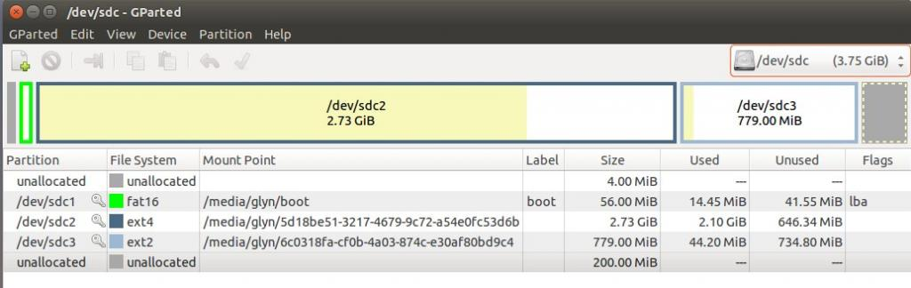

Update 24th June 2015: We have now moved to using a new pre-built SD cardf image. See thread: http://openenergymonitor.org/emon/node/10729 and Getting Started Guide
Following on from this thread, I thought I would create a new thread to support gathering feedback on this new SD card image which supports the Raspberry Pi 2. This new image will be backwards compatible with Raspberry Pi Model B and B+.
New Image Download:
UK Mirror 1: http://openenergymonitor.org/files/emonSD-13-03-15.zip
USA Mirror: http://oem.aluminumalloyboats.com/oem/emonSD-13-03-15.zip
Old:
http://oem.aluminumalloyboats.com/oem/emonSD-26-02-15.zip
Using the pre-built image: https://github.com/emoncms/emoncms/blob/bufferedwrite/docs/setup.md
Technical overview and image build guide: https://github.com/emoncms/emoncms/blob/bufferedwrite/readme.md
The image is the same as the previous pre-built image (emonSD-13-08-14) with the following updates:
* Update emonHub to latest 'Development' branch to add support from new RFM69Pi module (auto detect 9600/38400 baud and RSSI handling) Git: a9760494ef3ebac9f8661314fab2c0ed48a48736
* Resize /home/pi/data partition to 252Mb then increase root partition to 3.4Gb to make space for dist upgrade
* Enable firmware and distro to support new Raspberry Pi 2
apt-get update && upgrade
apt-get dist-upgrade
rpi-update
* Test support for Edimax WIFI
* Change host name raspberrypi > emonbase
Please could anyone with a Raspberry Pi 2 test the image image and post feedback / bugs here. Thanks.
Re: OLD: Raspberry Pi 2 pre-built SD card image (emonSD-13-03-15.img) BETA
It's working well here, with RFM12Pi V2.6!
Re: OLD: Raspberry Pi 2 pre-built SD card image (emonSD-13-03-15.img) BETA
The image download is 404 for me. (Also the old August 2014 version).
Re: OLD: Raspberry Pi 2 pre-built SD card image (emonSD-13-03-15.img) BETA
Good to hear. Sorry, download has been restored. Please try again. Sorry having issues with a Ubuntu VM server randomly powering down. Any ideas what could be causing this?!!
Anyways it's back up now.
Re: OLD: Raspberry Pi 2 pre-built SD card image (emonSD-13-03-15.img) BETA
Hi Glyn,
Two things come to mind regarding your random shutdown issue.
Power Supply unit and CPU fan. Over the last 20 years or so, I've seen the problem caused by the PSU more times than the CPU fan, but if the fan is not spinning, or is not spinning at the proper speed, it can cause system shutdowns.
Bill
Re: OLD: Raspberry Pi 2 pre-built SD card image (emonSD-13-03-15.img) BETA
Hi,
trying to download the image failed for me too, just right now.
Also got a 404-error...
regards/brutzler
Re: OLD: Raspberry Pi 2 pre-built SD card image (emonSD-13-03-15.img) BETA
Hello,
trying to download the image failed for me too.
Also got a 404-error...
regards/zajkor
Re: OLD: Raspberry Pi 2 pre-built SD card image (emonSD-13-03-15.img) BETA
If you're both desperate, you could try Bill Thomson's mirror in the USA (see http://openenergymonitor.org/emon/node/3827)
Re: OLD: Raspberry Pi 2 pre-built SD card image (emonSD-13-03-15.img) BETA
I've tried this image on a Pi 2 and didn't have any issues related to the recent Pi 2 upgrades but found the "1970" ntp issue occurred several times (not sure if that's because things are happening quicker on the Pi 2 or not as we have seen this issue many times before)
I also had an issue with the auto baud detection in emonhub on my rfm12 RFM2Pi now running the latest rf12demo.12 firmware (ie the RF69 compatible version but without COMPAT defined) this is an unusual combination so it's not an immediate problem, again I had seen it happen previously once or twice but it is more often than not now, so I will try to look into the auto baud detection in emonhub to resolve this.
I have made a little script that will
Install ntp-backup (which includes reverting the fake-hwclock.data file location) to avoid the "1970" issue.
Create a symlink to the /boot copy of emonhub.conf from it's intended location and revert the default location so that the file can be found in the same location by all users whilst also still being located on the boot partition. to further avoid confusion the script will delete the unused "cloned" conf.
It will remove the "first run" flag of raspi-config so that when run with a display and keyboard it won't automatically boot into the raspi-config menu despite being in RO mode and unable to edit any configuration. (this will also remove the "raspi-config not run" type message in the ssh header). raspi-config can still be used (although limited by the 3rd partition) by using "rpi-rw" before "sudo raspi-config"
To try and make emonHub a little friendlier to use a utility script is also included so that some options will be available directly from the command prompt.(hence changing the conf symlink so now all users can use emonhub -c from anywhere to open the conf for editing and the path, sudo amd rpi-rw are all taken care of).
The emonhub command can be used with any of these valid options
emonHub utilities
-c or --config Opens the configuration file (emonhub.conf) for editing
-h or --help Displays this help for emonHub utilities command options
-r or --restart Restarts the emonhub service
-s or --start Starts the emonhub service
-u or --update Updates emonhub from the git repository (git pull)
-v or --version Displays the emonHub version installed
-x or --exit Exits emonHub by stopping the emonhub service
emonHub logging
-dl or --display-log Display last 10 log messages and continue to monitor logging
-ol or --open-logfile Open logfile with "nano" text editor
-rl or --reset-logfile Reset the current logfile (deletes any existing log messages!)
-vl or --view-logfile View the entire logfile using "cat"
Any instances that require RW mode will take care of that so any of these commands can be used whilst still in RO mode, also without sudo annd if the file system was RO prior to the command it will be returned to RO. So if rpi-rw is used prior to a command it will not return to RO mode.
The suggested changes are attached for viewing, It would be good if these changes were incorporated into the pre-built image but can be optional as the script can easily be downloaded and installed using
After which the script will delete itself
Paul
EDIT - there was a problem with the file apparently a windows.txt file is not compatible as a linux.txt file. re upload from linux, so should be ok now.
Re: OLD: Raspberry Pi 2 pre-built SD card image (emonSD-13-03-15.img) BETA
Hi guys,
Really sorry for download downtime, ive moved it to our new server. It should download (much faster!) from: http://openenergymonitor.org/files/emonSD-12-02-15.img.zip
Re: OLD: Raspberry Pi 2 pre-built SD card image (emonSD-13-03-15.img) BETA
Hi Paul,
Thanks a lot for the suggested changes. The command line options is a great idea. I've ran the script to merge you chages into an SD card image release. However I don't seem to be able to get the command line options to work. I am correct that after install I should be able to run the command line options with
$ emonhub -e
or whatever other option the user desires? I get emonhub cannot be found error.
Re: OLD: Raspberry Pi 2 pre-built SD card image (emonSD-13-03-15.img) BETA
And is there a reason to have the raspi GUI on the image? I don't think much people wil use the emonbase RPI2 aa a desktop? Because if you strip down al the graphical **X11 libaries the image will go to about 1 GB instead of 3.5 GB.
I just installed emoncms,hub etc on a minimalistic RPI distro called minibian and it works great with just 1.5 gb of data :) https://sourceforge.net/projects/minibian/
Re: OLD: Raspberry Pi 2 pre-built SD card image (emonSD-13-03-15.img) BETA
Hi Glyn, yes that is how it should work, however although it works perfectly for me using local files, when I tried using the files from your server last night I had issues with file types (windows puts "^M" on every line which unix doesn't like, I had uploaded from windows originally).
I re-uploaded but didn't get a chance to test as it was late. I will re test this evening.
Was it just the emonhub command line script that didn't install? that's on a second script called from the "sd_mods" script". eg can /boot/emonhub.conf be found via /etc/emonhub/emonhub.conf?
Paul
Re: OLD: Raspberry Pi 2 pre-built SD card image (emonSD-13-03-15.img) BETA
The script seemed to run ok (or the first part at least). Yes emonhub.conf CAN be found in /etc/emonhub/ and the changes to raspi config worked ok.
Ah! I found the issue, http://openenergymonitor.org/emon/sites/default/files/emonhub_utilities.txt can't be found. It needed changing to http://openenergymonitor.org/emon/sites/default/files/emonhub_utilities_0.txt.
With the change made I ran the emonub utilities script and now the commands seem to work as advertised :-D
Great stuff. I'll release another SD card image on this thread for people to test. Thanks again.
@alco Yes, good point regarding the GUI. We certainly don't use the GUI here in the lab, emonBase are headless. The forthcoming emonPi actually makes it impossible to access the HDMI connector. I guess the reason for keeping it is trying to keep as close as possible to the official raspbien Raspberry Pi distro to make pulling in fixes easier and I suppose some users will use the GUI to do config and maybe run an energy dash display.
I think this is a discussion for another thread.
Re: OLD: Raspberry Pi 2 pre-built SD card image (emonSD-13-03-15.img) BETA
Update SD card image with Pauls changes above can be downloaded here, download link above has been updated and older image removed: http://openenergymonitor.org/files/emonSD-17-02-15.zip
Re: OLD: Raspberry Pi 2 pre-built SD card image (emonSD-13-03-15.img) BETA
>I suppose some users will use the GUI to do config and maybe run an energy dash display. <
I have been experimenting with just this! Using a small HDMI monitor and the Epiphany browser to show a dashboard. Kind of like a giant emonGLCD.
Re: OLD: Raspberry Pi 2 pre-built SD card image (emonSD-13-03-15.img) BETA
Glyn - Cheers for working that out, can the url be changed or the file duplicated/moved to http://openenergymonitor.org/emon/sites/default/files/emonhub_utilities.txt or do I need to change the post and the script file for users that have already got the previous image?
JD - Have you seen the Local display on RPi thread, The Pi auto boots into a fullscreen browser window, this could be linked to a movement detector so that it's only "lit up" when you are in the vicinity.
Paul
Re: OLD: Raspberry Pi 2 pre-built SD card image (emonSD-13-03-15.img) BETA
I had/have problems with the size of the emonSD12-02-15 image - it won't actually go on a Sandisk 4 GB SD at 3,965,190,144 bytes - so a reduction of 60 MB or so would be useful.
Re: OLD: Raspberry Pi 2 pre-built SD card image (emonSD-13-03-15.img) BETA
What about the low-write image? Will it be possible to have full featureset in a low write edition now we have more cpu and memory on the Pi 2?
And thanks for fast updates.
Re: OLD: Raspberry Pi 2 pre-built SD card image (emonSD-13-03-15.img) BETA
Robert - I had noticed the size has crept up too, I think the increased size could be avoided, infact the image could almost be halved if
A) the wolfram-engine and games were removed, I tested this last night and with these commands reduced the default 2.4GB OS to 1.8GB after installing LAMP, emonCMS and emonHub I was back upto 2GB.
B) now the fake-hwclock.data is no londer in the data partition I wonder if it needs to be on the default image, omiting the 3rd partition would reduce the image size and allow raspi-config to be used to expand the fs. Only if running local low-write emoncms would the 3rd partition be needed so it's creation could be part of the emoncms-enable routine, either in the guide or automated in the script.
SD cards do vary so a minimal 100MB reduction might be safer in case of a smaller 4GB card.
haden - the low-write is all about the writing to disk so unfortunately as long as it's on a sd card the writes have to be limited, However.....
Trystan - Something you mentioned the the other day when we discussed emonView/emonCMS accessing emonHub's conf file struck a cord with me, the data writing probably isn't the problem that "low-write" needs to crack, the data isn't written and re-written to cause the card to fail, if anything it's the least written to part of the sd card. Surely the SQL indexes and last values are the bits that will cause a sdcard to fail as the same location is written to time amd time again.
If the input and feed tables were text files and the data was loaded to memory (of which we now have plenty) in theory the SD card is not an issue. even a full version of emoncms with editing and averaging should be possible if SQL is dropped for text files and RAM.
excuse the rambling :-)
Paul
Re: OLD: Raspberry Pi 2 pre-built SD card image (emonSD-13-03-15.img) BETA
Hi Paul / Robert
Your correct, when I fiddled with the sd partitions to make room for the extra space needed for the latest version of raspbien I maxed out the Transcend 4gb sd cards that we currently use. Agree, it would be best if it was slightly smaller to allow for sd card variation
Good idea stripping out unused parts of raspbien. I will look to re create stripping out the packages you mention. The resizing the partitions to reduce size of the image.
Agree, the third partition could be omitted them re-created during the emoncms local setup routine,the could be beneficial as it would then allow the third partition to be created to the max size the card the user is currently using, maximising the amount of space for logged data. Could this be something you could add to the emoncms local creation script? How much work would it be? I'll have a chat with Trystan regarding your thoughts on sd card writing.
Re: OLD: Raspberry Pi 2 pre-built SD card image (emonSD-13-03-15.img) BETA
If you remove those items the image should be under 2GB (excluding 3rd partition) also try using resize2fs -M to compact but not compress the the file system (I guess like windows defrag) you can then set the partition size to 2GB or 2.4GB (use resize2fs again to max the FS inside the smaller partition) that will zip smaller than the original Raspbian download and leave plenty of room for the 3rd partition and FS expansion even on the smallest of 4GB cards, 1GB for data-only when using just PHPfina and PHPTimeseries will last a considerable time (years probably if only a node or 2 is used).
I can't see why it shouldn't be possible to manipulate the partitions from a script, the thing to factor in is some users will go from a forwarder only setup to a local emoncms set up at a later date rather than straight into a local emoncms. so it would be best to provide a way of "making room for the 3rd partition" rather than assuming the space is there because it's a fresh install.
I'm happy to have a go if you want to go that route, but I think Trystan would need to make the final decision on the 3rd partition as it's his software plus there are 2 other files on that drive that appear empty but may be utilized at some point, if they are just lock files they could be moved somewhere that gets created in RAM on a RO image like the logfiles in /var/log.
Paul
Re: OLD: Raspberry Pi 2 pre-built SD card image (emonSD-13-03-15.img) BETA
Just deleted the items on my home pi that had 404kb left, now I have 496Mb! Thanks Paul!
Re: OLD: Raspberry Pi 2 pre-built SD card image (emonSD-13-03-15.img) BETA
Done! File system now looks like this. I've left 100Mb at the end of the FS so image should now fit on any 4GB SD.
pi@emonbase ~ $ df -h
Filesystem Size Used Avail Use% Mounted on
rootfs 2.7G 2.0G 491M 81% /
/dev/root 2.7G 2.0G 491M 81% /
devtmpfs 214M 0 214M 0% /dev
tmpfs 44M 232K 44M 1% /run
tmpfs 5.0M 0 5.0M 0% /run/lock
tmpfs 88M 0 88M 0% /run/shm
tmpfs 30M 4.0K 30M 1% /tmp
tmpfs 30M 120K 30M 1% /var/log
/dev/mmcblk0p1 56M 15M 42M 26% /boot
/dev/mmcblk0p3 856M 32M 780M 4% /home/pi/data
I'm uploading now image now. Please test on a Pi2 and post reports. If all looks good I'll do an 'official' release i.e post on the image download page. Thanks for your help.
Re: OLD: Raspberry Pi 2 pre-built SD card image (emonSD-13-03-15.img) BETA
New image can be downloaded from: http://openenergymonitor.org/files/emonSD-21-02-15.zip (1.2Gb). Link up top has been updated
Re: OLD: Raspberry Pi 2 pre-built SD card image (emonSD-13-03-15.img) BETA
hello everyone
Also contains updates for local dashboards, currently at version 8.3.2
Re: OLD: Raspberry Pi 2 pre-built SD card image (emonSD-13-03-15.img) BETA
Hi Glyn, just tried the latest image and went to look at the 3rd partition and found mySQL tables, the feedwriter is active too, as is apache although not fully configured.
If I nav to the IP of Pi it redirects to /emoncms (intentionally I assume) but I do not get the emoncms or the usual "it works!" I get "Can't connect to redis database, it may be that redis-server is not installed or started see readme for redis installation".
Are you still shipping with dormant emoncms or active?
Paul
Re: OLD: Raspberry Pi 2 pre-built SD card image (emonSD-13-03-15.img) BETA
Mmm, thanks for testing. It should be dormant. Enabled with the emoncms local script. I'll take a look..
Re: OLD: Raspberry Pi 2 pre-built SD card image (emonSD-13-03-15.img) BETA
RPi 2B just arrived today, so I wanted to test it out to see if the Website is faster responding if configuring dashboards or just doing stuff...
I had the same problem as Paul, but SSH and: sudo service redis-server start
helped, so I'm running!
Some other points:
- I like the "emonhub" function, this sure makes it easier to start!
- I had troubles with "1970" on my previous version, sounds like this is sorted out :)
- however, the download of the image was awfully slow with ~70kb/s, from the US server i got upto 1.7Mbit/s, what about using torrents to distribute the images?
Now I'm off to try to migrate measurementdata from the old one, and then let both of them running to see how they perform....
Re: OLD: Raspberry Pi 2 pre-built SD card image (emonSD-13-03-15.img) BETA
Thanks for feedback, I've done another image with emoncms local disabled by default
http://openenergymonitor.org/files/emonSD-23-02-15.zip
Please post feedback if anyone can test.
Thanks,
Re: OLD: Raspberry Pi 2 pre-built SD card image (emonSD-13-03-15.img) BETA
Hi Glyn, I've tried to install this on both a 4GB SDcard and a 4GB USB stick and unfortunately it wouldn't fit either one. It's not an issue for me but thought you should know, the 4GB card was actually my original shop bought "rock-solid gateway" so some users may still struggle with it's size.
I'll have a closer look tomorrow and see if I can see anyway to "trim some fat" or better still automate the 3rd partition creation so it can be left off the pre-built image.
Paul
Re: OLD: Raspberry Pi 2 pre-built SD card image (emonSD-13-03-15.img) BETA
Ok, 100MB of un-allocated space at the end of the image is obviously not enough to cover all differences in 4GB SD cards. I see you need 117760 fewer sectors which if each sector is 512B equates to 60MB? I'll reduce the image by a further 100MB to play it safe. The 3rd partition can always be extended when needed after it's been writteb to the SD.
Re: OLD: Raspberry Pi 2 pre-built SD card image (emonSD-13-03-15.img) BETA
New reduced size image is available for download: http://openenergymonitor.org/files/emonSD-24-02-15.zip
Please let me know if this one fit's on your SD card.
Cheers
Re: OLD: Raspberry Pi 2 pre-built SD card image (emonSD-13-03-15.img) BETA
Sorry Glyn. I'm not sure what's happened there! the zipped file is indeed smaller but when unzipped it's the same size as it was yesterday, I've downloaded it twice and unzipped it a few times to different places.
Paul
Re: OLD: Raspberry Pi 2 pre-built SD card image (emonSD-13-03-15.img) BETA
Mm maybe the un-allocated space is also being included in the image. What happens when you try and write it to your card? Maybe the image file can be trimmed, if the un allocated space is indeed included we should be able to safely trim 200mb
Re: OLD: Raspberry Pi 2 pre-built SD card image (emonSD-13-03-15.img) BETA
Hi Glyn,
I tried to write the image to an SD card, but the same thing happened to me as to Paul. Image can't be written, not enough space on the destination device.
Bill
Re: OLD: Raspberry Pi 2 pre-built SD card image (emonSD-13-03-15.img) BETA
Hi Bill, thanks for testing. I don't know what's going on, the image write OK to all the SD cards I have here in the lab. How small is your SD card? This is what the image looks like to me. There is 200MB of un-allocated space at the end of the image

Re: OLD: Raspberry Pi 2 pre-built SD card image (emonSD-13-03-15.img) BETA
Glyn,
Looking at the dd documentation on Wikipedia, it looks as if the command to copy a drive will do exactly that - including the unallocated space. Could it be that you need to do the partitions separately, as that will naturally exclude the unallocated space, or can you do "bs=nnn count=xxx" (working out what xxx and nnn are!) to copy only up to the end of sdc3?
Re: OLD: Raspberry Pi 2 pre-built SD card image (emonSD-13-03-15.img) BETA
Hi Glyn, If you are creating a image and letting the "imager" decide where to finish it will include the whole of "sdc" including the unallocated portion.
If you are using dd you need to define count=n, where n is the size of sdc minus the unallocated/unwanted part in whatever block size you are using.
eg my sdcard image is count=2700 bs=1MB
2700 (1000*1000 byte) blocks 2700000 bytes or 2575M or 2.5G
It looks like your partitioned part is
3569MiB3635MiB (the GiB is 1024 BiB's not 1000)(I think the MiB is just M in DD ie 1024*1024 per block not 1000*1000)
so try dd if=/dev/sdc of=emonSD.img bs=1M count=
35693635The different bases, names and standards are a nightmare,just for future ref I normally leave the surplus allocated (but unused) and just cut it off with dd's count rather than trying to align the file sytem, partition and image sizes. that way you get access right up to the end without long calculations and errors.
Paul
EDIT - Mr Wall strikes again, pipping me to the post !
Re: OLD: Raspberry Pi 2 pre-built SD card image (emonSD-13-03-15.img) BETA
Doh!
Re: OLD: Raspberry Pi 2 pre-built SD card image (emonSD-13-03-15.img) BETA
GM Glyn and Paul,
I had no luck in writing the image to a 4GB SD card with Windows. However, I was able to write to the same card succesfully with Linux dd. Popped the card into a spare Pi and it booted up OK.
Re: OLD: Raspberry Pi 2 pre-built SD card image (emonSD-13-03-15.img) BETA
Hi Bill, I thinks what's happening there is the dd is copying the image and just running out of space and ending. Because there isn't anything on the missing part nothing is missing. the image is effectively cropped whilst written to the end target rather than being cropped to size at the image creation.
The end result is the same IF you have a linux box and dd. win32diskimager will just fail without trying.
Paul
Re: OLD: Raspberry Pi 2 pre-built SD card image (emonSD-13-03-15.img) BETA
Hi Paul,
From what I've seen in the past, dd will, as you mentioned, copy what it can of the image, but has always given me an error to the effect that it's run out of room. (that's dd on Debian, CentOS, Puppy and Slackware - the four distros that I use)
When I did the copy this morning, I didn't get an error message.
I took a look at what MS calls the "on disk" file size, and that number was a bit over 4GB (4.025 and change, if memory serves)
Here's an fdisk -l dump of the image file:
# fdisk -l /mnt/sdb5/emonSD-24-02-15.img
Disk /mnt/sdb5/emonSD-24-02-15.img: 4025 MB, 4025483264 bytes
255 heads, 63 sectors/track, 489 cylinders, total 7862272 sectors
Units = sectors of 1 * 512 = 512 bytes
Sector size (logical/physical): 512 bytes / 512 bytes
I/O size (minimum/optimal): 512 bytes / 512 bytes
Disk identifier: 0x000b5098
Device Boot Start End Blocks Id System
/mnt/sdb5/emonSD-24-02-15.img1 8192 122879 57344 c W95 FAT32 (LBA)
/mnt/sdb5/emonSD-24-02-15.img2 122880 5857279 2867200 83 Linux
/mnt/sdb5/emonSD-24-02-15.img3 5857280 7452671 797696 83 Linux
Heres what I got when I copied the image via Linux dd:
# dd if=/mnt/sdb5/emonSD-24-02-15.img of=/dev/sdc bs=1M
3839+0 records in
3839+0 records out
4025483264 bytes (4.0 GB) copied, 377.817 s, 10.7 MB/s
And here's what I get when dd runs out of room:
# dd if=/mnt/sdb5/emonSD-24-02-15.img of=/dev/sdc bs=1M
dd: writing `/dev/sdc': No space left on device
1908+0 records in
1907+0 records out
1999634432 bytes (2.0 GB) copied, 364.96 s, 5.5 MB/s
I wrote the image to a 2GB card purposely to force the error, but as you can see, if it runs out of room, it shows the amount of data actually copied, and the error msg.
Re: OLD: Raspberry Pi 2 pre-built SD card image (emonSD-13-03-15.img) BETA
Then again, there has to be an advantage in not copying empty space unless it's zeroed (and I really mean zeroed) because truly zeroing it will allow Zip to recognise a huge string of identical bytes and compress them efficiently, whereas leaving deleted or random data will hobble Zip and leave a big download (of unwanted rubbish) in the unused but not empty areas.
Re: OLD: Raspberry Pi 2 pre-built SD card image (emonSD-13-03-15.img) BETA
I would of expected the "No space" message too. plus the difference of 1 between records in and out where it pulls on in and then finds theres no where to put it.
My original math was out slightly but still doesn't marry up exactly 3839 M verses 3635+200MiB M(iB)'s MIA
the 4.025GB translates to 3.74G so should fit but as we see on my screenshots win32diskimager thinks otherwise, probably getting confused with all the math.
It looks like win32diskimager is at fault for thinking it won't fit and to counter that Glyn can reduce the size using bs & count. But I agree with Robert in that there is no point in zipping up and downloading unused space.
I would leave the partition full size and just use bs/count to cut it off as whatever size to make it as compatible as possible, which is probably slightly larger than the current useable space as the partition has been shrunk twice but but the image was only just oversize but the difference is minimal.
Paul
Re: OLD: Raspberry Pi 2 pre-built SD card image (emonSD-13-03-15.img) BETA
Yeah, kind of silly to zip the unused stuff.
Just to see how much difference it made, I created a fourth partition from the unused space, then ran dd if=/dev/zero on it.
It only adds ~10MB, but hey, why waste time, space, etc with 10 Megs if you don't have to, right?
4035969024 Feb 25 11:44 emon-0.img
4025483264 Feb 25 10:40 emonSD-24-02-15.img
I agree, using the dd count option to not copy the stuff in the first place, is the best way to go.
Re: OLD: Raspberry Pi 2 pre-built SD card image (emonSD-13-03-15.img) BETA
Not sure what changed, other than all the writing (today) to the same SD card that I couldn't write to yesterday with Windows. But now I'm able to succesfully write the emonSD-24-02-15.img file via Win32DiskImager. Card boots with no problems.
Re: OLD: Raspberry Pi 2 pre-built SD card image (emonSD-13-03-15.img) BETA
It works fine, after setting my emoncms.org API key it started posting.
The only thing is after a reboot or halt, emonhub gives a communication RX error. This is solved by doing a "sudo service emonhub restart".
I tried to set the baud_rate = 9600 because I'm using an "old" RFM2Pi with a ATTiny cpu. Look like that solved the problem.
For the record, I tested this image on an "old" Rpi model B with a 8GB SD Card. I was not able to write it to my Element14 Debian 6 4GB SD card, to small.
---------------------------
Write Error
---------------------------
Not enough space on disk: Size: 7862272 sectors Available: 7761920 sectors Sector size: 512
---------------------------
OK
---------------------------
Re: OLD: Raspberry Pi 2 pre-built SD card image (emonSD-13-03-15.img) BETA
Thanks a lot for your help. I think I've got there!
This would explain why I've had not problem writing the image to all the 4GB SD cards here in the lab, I've been using dd on Linux and as you say when it runs out of space it just stops.
I've now re-imaged the image using dd if=/dev/sdc of=emonSD.img bs=1M count=3635. This has resulted in a 3.8GB image as opposed to a 4GB image when un-compressed. As expected it compresses to the same size.
I've tested writing it back to SD card and it works fine for me.
Updated image can be downloaded from: http://openenergymonitor.org/files/emonSD-26-02-15.zip
I've updated the main image download page to point to the new image. We are starting to ship RFM69Pi's next week in the shop and I'm sure many folk will be wanting to use RasPi 2's therefore using the new image will be essential. As of this week pre-loaded SD cards sold in the shop will have the new image.
Thanks again for your help.
Re: OLD: Raspberry Pi 2 pre-built SD card image (emonSD-13-03-15.img) BETA
Hi, I'm running into a few issues with the emonSD-26-02-15 image. I'm new to the software and it's probably something basic I'm not understanding, I hope you'll bear with me :-)
Installation and setup on the Raspberry works fine. I'm only using the local emoncms on the Raspberry, as this will go to a site without internet access. What I did so far: configure reporting to localhost in emonhub.conf. But I have no interfacers or nodes setup yet, I just mention that in case this screws things up... First I wanted to try out emoncms with some fake data posted from a browser.
A few questions:
1- I'd like to have a few extra users who can only view the data and maybe make dashboards, but not edit or post any data. What would be a good way to achieve this? Registering new users ($allowusersregister = TRUE) doesn't work for this purpose. new users have full access to the data, feeds etc.
2- Posting test data from the web-browser works fine, but only when I'm logged into the Emoncms web page. I can't post any data anymore (no 'ok' shown) as soon as I logout from: 10.0.0.180/emoncms/ . What am I doing wrong here: should I add any other parameters to the URL?
My URL: http://10.0.0.180/emoncms/input/post.json?json={power:200}&apikey=b53ec1pb66610c66009b207d6207f2c9e
Bart
Re: OLD: Raspberry Pi 2 pre-built SD card image (emonSD-13-03-15.img) BETA
Hi Bart
Re: "1" I agree this would be a good idea, I've requested it previously but there wasn't any interest. I would really like to encourage family and friends to use emoncms & OEM by granting them access to my account so they can create their own dashboards or just view existing ones without making them public, However currently I'm not willing to allow anyone access as the risk of accidental damage or data loss is too great.
Re "2" Try adding a node id, if you are using the example input api urls, a recent change to emoncms prevents inputs without a node id being used, but the webpage is bit out of data.eg
If you figure out "1" let us know :-)
Paul
Re: OLD: Raspberry Pi 2 pre-built SD card image (emonSD-13-03-15.img) BETA
'morning Paul,
Unfortunately I don't have the expertise (yet...) to fix '1'.
wrt security: I didn't bother to hide my apikey, as I noticed the prebuilt image always uses the same apikey anyway (as it was generated and stored before making the image). Not a problem for me as I'm on a closed LAN, but maybe something to be aware of when you want to expose the rPi to the outside world.
Re '2' It seems the node ID is not mandatory, EmonCMS still accepts data without node ID, writing to node 0.
It turns out I was confusing myself.... I simply made a typo in the apikey in my original URL. However, the data was accepted when I was logged in to EmonCMS but not when I was logged out (as the apikey was incorrect). When I'm logged into EmonCMS I can just use http://10.0.0.180/emoncms/input/post.json?json={volt:12.40} to write data.
Bart
Re: OLD: Raspberry Pi 2 pre-built SD card image (emonSD-13-03-15.img) BETA
Morning!
I wasn't aware of the "common" apikey hopefully Trystan or Glyn are,
Regards "2" the omittion of a node id has been the source of several issues over the last couple of months. You won't notice an issue whilst using named inputs eg volt or power etc, The symptoms if it does go wrong is many (sometimes thousands) of new inputs.
I strongly recommend using a node id of 1 or greater.
"Not sure what is going on, maybe this is caused by Firefox?" As far as I'm aware what you now describe sounds correct, you won't need an apikey to post data .whilst logged into emoncms from the same location.
Paul
Re: OLD: Raspberry Pi 2 pre-built SD card image (emonSD-13-03-15.img) BETA
Hi Paul, I see you reacted on my initial post. I changed it later when I realised it was just a case of me not understanding the documentation :-) In the Input API help page it says clearly that the apikey is only necessary when not logged in.
I'll follow your recommendation about the node ID, better to be specific when sending data.
Bart
Re: OLD: Raspberry Pi 2 pre-built SD card image (emonSD-13-03-15.img) BETA
I have been having some stability issues with using the Pi2, is seems more stable firmware is now available, I pulled in the latest updates and made a new image:
http://openenergymonitor.org/files/emonSD-13-03-15.zip
This seems to have fixed the issues (kernel panic / crash) for me when using the Pi 2. Please let me know if you also experienced this issues and if this fixed it
Re: OLD: Raspberry Pi 2 pre-built SD card image (emonSD-13-03-15.img) BETA
I just updated my Raspberry B+ setup with a brand new Raspberry 2. At the same time I formatted the SD card with the new emonSD-13-03-15, but I did follow the backup instructions in order not to setup from scratch everything and not to loose the recorded data.
I am recording everything locally and I used the mysqldump -u root -p emoncms > emoncms_backup.sql command to backup the data. I restored the data to the freshly formatted with emonSD-13-03-15 SD card by using the mysql -u root -p emoncms < emoncms_backup.sql command and almost everything reappeared in the input/feeds/dashboard.
Unfortunately the graphs are not working (the box outline appears, but no line/bar). None of them. Everything else seems normal, the values in the feeds and the gauges appear and refresh normally. Am I missing something or is there a bug in the latest version?
Stef
Re: OLD: Raspberry Pi 2 pre-built SD card image (emonSD-13-03-15.img) BETA
I posted a while back on a previous thread the option to send updates to PVOutput as well, is this something that will be entertained ?
Re: OLD: Raspberry Pi 2 pre-built SD card image (emonSD-13-03-15.img) BETA
"In the Input API help page it says clearly that the apikey is only necessary when not logged in."
I was thinking about this. What happens if I'm logged in and someone uses the right URL to send fake data for my emoncms (without API)? Is that data accepted?
Re: OLD: Raspberry Pi 2 pre-built SD card image (emonSD-13-03-15.img) BETA
I have just tried the image on a Pi 2 and I can't get the graphs to display when not logged on (only the box is displayed). When I am logged on I can see the graph data.
Re: OLD: Raspberry Pi 2 pre-built SD card image (emonSD-13-03-15.img) BETA
You will need to make the dashboard and the feeds included on the dashboard to be public, click the padlock symbol so to changes to a little world: http://www.awesomescreenshot.com/image/94435/28291c9b8c82fcf233886c965c1be99c
Re: OLD: Raspberry Pi 2 pre-built SD card image (emonSD-13-03-15.img) BETA
Bruno - To answer the question "What happens if I'm logged in and someone uses the right URL to send fake data for my emoncms (without API)? Is that data accepted?" No. Even if you open 2 different browsers on the same PC and login to emoncms from one, you would not be able to post data from the other without an apikey.
The comment about not need ing an apikey when logged in is because a session has been established and authorized so use of a apikey within the scope of that sessions boundaries ie that browser, won't be needed. It certainly doesn't disable authorization for any other parties.
Paul
Re: OLD: Raspberry Pi 2 pre-built SD card image (emonSD-13-03-15.img) BETA
Warlock - I'm not a PVOutput user and I do not know what is required by their site, but I am happy to contribute towards a PVOutput solution if you or anyone else want that functionality brought to emonhub.
I looked out your previous post as I know I have answered this same question before, but it wasn't the post I was thinking off. However maybe a discussion about PVoutput would be more fruitful in it's own thread rather than on the "emonHub development - increase in scope of values over rfm network" thread or on this thread about the SD card image.
If you want to start a thread with some specifics about whats required or what you need/propose or better still an example or some links and go from there.
Paul
Re: OLD: Raspberry Pi 2 pre-built SD card image (emonSD-13-03-15.img) BETA
That's a relief :D Thanks for clarify it!
Re: OLD: Raspberry Pi 2 pre-built SD card image (emonSD-13-03-15.img) BETA
Hi, I think being a novice I've been a muppet... Downloaded emonSD-13-03-15.img, copied on to 16GB SD card using win32diskImager, put into Pi, can communicate using PUTTY followed the instructions inc. rpi -rw,
localemoncms-enable, (also changed both passwords as recommended) also set the reporters to be 868MHz and localemons as follows (I only want to report locally):
# This reporter sends data to emonCMS
#[[emonCMS]]
# Type = EmonHubEmoncmsReporter
# [[[init_settings]]]
# [[[runtimesettings]]]
# url = http://emoncms.org
# apikey = xxxxxxxxxxxxxxxxxxxxxxxxxxxxxxxx
[[emonCMS_local]]
Type = EmonHubEmoncmsReporter
[[[init_settings]]]
[[[runtimesettings]]]
url = http://localhost/emoncms
apikey = b53ec1abe610c********7d6207f2c9e
#######################################################################
####################### Interfacers #######################
#######################################################################
[interfacers]
# This interfacer manages the RFM2Pi module
[[RFM2Pi]]
Type = EmonHubJeeInterfacer
[[[init_settings]]]
com_port = /dev/ttyAMA0
[[[runtimesettings]]]
group = 210
frequency = 868
baseid = 15
(The Write API was taken from the browser as per instructions)
However when I run emonhub.log I get:
pi@emonbase ~ $ tail -f /var/log/emonhub/emonhub.log
2015-05-10 16:53:53,775 INFO EmonHub Pre-Release Development Version (rc1.2)
2015-05-10 16:53:53,778 INFO Opening hub...
2015-05-10 16:53:57,958 WARNING Device communication error - check settings
I've tried two different RFM12Pi's (I have another Pi that is running a much earlier version of Emoncms) one is V2.5.3, the other is V2.6 neither seem to connect. (But they both work on the old version of Emoncms)
Have also tried doing all of the config on the Pi without the RFM12Pi connected and also with the RFM12Pi connected to no avail. In both instances the RF ACT LED flashes as data is received by the RFM12Pi Also tried all of this with a Pi 2 as well as a Pi again no inputs logged :-(
The existing nodes are all 868MHz Group 210 and work into existing Pi (and a Arduino with a monitor sketch running)
What am I doing wrong? Can anyone help this novice :-)
Many Thanks
Andy
APIkey obfuscated - Moderator (RW)
Re: OLD: Raspberry Pi 2 pre-built SD card image (emonSD-13-03-15.img) BETA
Hi Andy
First thing to try is defining the baud rate for the rfm2pi in emonhub.conf. Depending on type, age and firmware etc the baud will probably be 9600, 38400 or 57600. emonhub attempts to determine this automatically and although there have been no changes to emonHub it does seem to be more troublesome recently.
In the [[RFM2Pi]][[[init_settings]]] of emonhub.conf add a line "com_baud = " with the correct baud for your rfm2pi.
Paul
Re: OLD: Raspberry Pi 2 pre-built SD card image (emonSD-13-03-15.img) BETA
Paul,
Many many thanks
set Com_baud = 9600 and it sprang into life!
I wonder if that is worth adding to the build instructions (I know it has it for the RFM69)
The problem I'm investigating... (original pi running emoncms) occasionally records 'false nodes such as node 1 (with random data ) that does not exist in my system. using a Arduino with some monitor software has not recorded any node 1's hence my theory that it is something in the Pi code
Andy
Re: OLD: Raspberry Pi 2 pre-built SD card image (emonSD-13-03-15.img) BETA
Hi Andy
If you set the loglevel to DEBUG in emonhub.conf then you can cross reference any rogue entries that appear in emoncms to see if they came via emonhub and if so were they correctly forwarded, already wrong or has emoncms done something funky with them on receipt.
Paul
Re: OLD: Raspberry Pi 2 pre-built SD card image (emonSD-13-03-15.img) BETA
Paul,
Thank you very much. I wonder if I could trouble you with another novice question...?
I'm now trying to install the optional PacketGen module when it says:
"Start by installing packetgen by running the following in your emoncms/Modules folder" which folder does it actually mean? I appear to have:
pi@emonbase /home $ cd /home/pi
pi@emonbase ~ $ dir
data emonhub emonpi
I've tried running "git clone https://github.com/emoncms/packetgen.git" from the emonhub directory but when I goto 'Admin' and 'update' in the browser it just says database is upto date.
Finally am I correct in saying that 2/dev/mmcblk0p3 " is where the data received from the input is stored?
Many thanks
Andy
Re: OLD: Raspberry Pi 2 pre-built SD card image (emonSD-13-03-15.img) BETA
The emoncms/Modules folder is usually located in /var/www so
git clone https://github.com/emoncms/packetgen.git /var/www/emoncms/Modules/packetgen
should do the job.and yes, the "3rd Partition" /dev/mmcblk0p3 is where the data feeds get stored by emoncms, not strictly the inputs as such as the data get passed through emonhub to emoncms and then saved to your feeds, the inputs are not saved directly. The 3rd partition is mounted as the "data" folder so it appears as part of the 2nd partition.
Paul
Re: OLD: Raspberry Pi 2 pre-built SD card image (emonSD-13-03-15.img) BETA
Paul,
Many Thanks again, really appreciated!
Re: OLD: Raspberry Pi 2 pre-built SD card image (emonSD-13-03-15.img) BETA
IPv6 are not working correct.
I can enable, get a link local address ... but cannot connect with ipv6.
Ping is possible from windows machine to pi
Re: OLD: Raspberry Pi 2 pre-built SD card image (emonSD-13-03-15.img) BETA
IPv6 are not working correct.
Did you try the suggestion I made in your earlier thread on the topic?
http://openenergymonitor.org/emon/node/10697
Re: OLD: Raspberry Pi 2 pre-built SD card image (emonSD-13-03-15.img) BETA
From another forum I get an info and it work now:
sudo ip6tables -F && sudo ip6tables -t nat -F && sudo ip6tables -t raw -F && sudo ip6tables -t security -F && sudo ip6tables -t mangle -F
sudo ip6tables -X
sudo ip6tables -t nat -X
sudo ip6tables -t raw -X
sudo ip6tables -t security -X
sudo ip6tables -t mangle -X
sudo ip6tables -t raw -P PREROUTING ACCEPT
sudo ip6tables -P FORWARD ACCEPT
sudo ip6tables -P INPUT ACCEPT
sudo ip6tables -P OUTPUT ACCEPT
After this I was able to connect via ipv6 and also Apache is running with ipv6
Re: OLD: Raspberry Pi 2 pre-built SD card image (emonSD-13-03-15.img) BETA
Great to hear that you got this working? Is ipv6 not built into standard Raspbian? Shall we look to include ipv6 support following the steps you outline above in future pre built SD card image builds? Will this adversely effect ipv4 setups? How many installs to you think will require ipv6?
Re: OLD: Raspberry Pi 2 pre-built SD card image (emonSD-13-03-15.img) BETA
Hi,
I think IPv6 should be a standard. We create a new buildingsystem who communicate "only" with ipv6. There are many benefits with ipv6.
I checked now that I need a script to run this commands each boot. Hope to find a solution ... but a startscript is also ok for me!
Re: OLD: Raspberry Pi 2 pre-built SD card image (emonSD-13-03-15.img) BETA
Once you have working solution could you make scrip that can be used to apply required ipv6 changes. I can then use this to roll it into into next release. Cheers
Re: OLD: Raspberry Pi 2 pre-built SD card image (emonSD-13-03-15.img) BETA
Is ipv6 not built into standard Raspbian?
It's built in, just not enabled by default:
root@raspberrypi1:/home/pi# ifconfig eth0 eth0 Link encap:Ethernet HWaddr b8:27:eb:64:96:1c inet addr:192.168.1.109 Bcast:192.168.1.255 Mask:255.255.255.0 UP BROADCAST RUNNING MULTICAST MTU:1500 Metric:1 RX packets:155 errors:0 dropped:0 overruns:0 frame:0 TX packets:108 errors:0 dropped:0 overruns:0 carrier:0 collisions:0 txqueuelen:1000 RX bytes:16944 (16.5 KiB) TX bytes:15123 (14.7 KiB)You can enable it on the fly with modprobe, or by adding the module into /etc/modules for future reboots:
root@raspberrypi1:/home/pi# modprobe ipv6 root@raspberrypi1:/home/pi# ifconfig eth0 eth0 Link encap:Ethernet HWaddr b8:27:eb:64:96:1c inet addr:192.168.1.109 Bcast:192.168.1.255 Mask:255.255.255.0 inet6 addr: fe80::ba27:ebff:fe64:961c/64 Scope:Link UP BROADCAST RUNNING MULTICAST MTU:1500 Metric:1 RX packets:218 errors:0 dropped:0 overruns:0 frame:0 TX packets:148 errors:0 dropped:0 overruns:0 carrier:0 collisions:0 txqueuelen:1000 RX bytes:21987 (21.4 KiB) TX bytes:20470 (19.9 KiB)At this stage, the interface has an ipv6 link local address that I can ping from other machines on the LAN but I can't ssh into:
A single line patch to /etc/ssh/sshd_config fixes that:
You then need to send a HUP to sshd to get it to re-read its modified config file:
And voila... the other machine can now ssh in....
All of that is on a standard raspbian machine, not an emonpi. unique24's commands above manipulate the ipv6 firewall rules, but you can see on my raspbian machine, the firewall's default setting is quite relaxed:
I'm unable to reconcile why unique24's ip6tables commands solve the problem, they don't appear to on a standard raspbian machine. I don't have an emonpi machine to experiment with, but I can only assume that the networking setup on an emonpi is different from that of a standard raspbian insall (2015-05-05-raspbian-wheezy.img).
Re: OLD: Raspberry Pi 2 pre-built SD card image (emonSD-13-03-15.img) BETA
Hi dBC!
Many thanks ... i will try this again on a fresh new installation!
The problem was also http ... maybe can you check if your solution also fix this?
Thanks!
Re: OLD: Raspberry Pi 2 pre-built SD card image (emonSD-13-03-15.img) BETA
Hello again!
I disabled my script and check the ip6table ... your are right, this is complete different.
After my script, it show the same at yours. (How did you format here in the forum your lines in a different format to better reading the debug output?)
root@emonbase:/home/pi# ip6tables -L
Chain INPUT (policy DROP)
target prot opt source destination
ufw6-before-logging-input all anywhere anywhere
ufw6-before-input all anywhere anywhere
ufw6-after-input all anywhere anywhere
ufw6-after-logging-input all anywhere anywhere
ufw6-reject-input all anywhere anywhere
ufw6-track-input all anywhere anywhere
Chain FORWARD (policy DROP)
target prot opt source destination
ufw6-before-logging-forward all anywhere anywhere
ufw6-before-forward all anywhere anywhere
ufw6-after-forward all anywhere anywhere
ufw6-after-logging-forward all anywhere anywhere
ufw6-reject-forward all anywhere anywhere
Chain OUTPUT (policy ACCEPT)
target prot opt source destination
ufw6-before-logging-output all anywhere anywhere
ufw6-before-output all anywhere anywhere
ufw6-after-output all anywhere anywhere
ufw6-after-logging-output all anywhere anywhere
ufw6-reject-output all anywhere anywhere
ufw6-track-output all anywhere anywhere
Chain ufw6-after-forward (1 references)
target prot opt source destination
Chain ufw6-after-input (1 references)
target prot opt source destination
ufw6-skip-to-policy-input udp anywhere anywhere udp dpt:netbios-ns
ufw6-skip-to-policy-input udp anywhere anywhere udp dpt:netbios-dgm
ufw6-skip-to-policy-input tcp anywhere anywhere tcp dpt:netbios-ssn
ufw6-skip-to-policy-input tcp anywhere anywhere tcp dpt:microsoft-ds
ufw6-skip-to-policy-input udp anywhere anywhere udp dpt:bootps
ufw6-skip-to-policy-input udp anywhere anywhere udp dpt:bootpc
Chain ufw6-after-logging-forward (1 references)
target prot opt source destination
Chain ufw6-after-logging-input (1 references)
target prot opt source destination
Chain ufw6-after-logging-output (1 references)
target prot opt source destination
Chain ufw6-after-output (1 references)
target prot opt source destination
Chain ufw6-before-forward (1 references)
target prot opt source destination
DROP all anywhere anywhere rt type:0 segsleft:0
ufw6-user-forward all anywhere anywhere
Chain ufw6-before-input (1 references)
target prot opt source destination
ACCEPT all anywhere anywhere
DROP all anywhere anywhere rt type:0 segsleft:0
ACCEPT ipv6-icmp anywhere anywhere ipv6-icmp neighbour-solicitation HL match HL == 255
ACCEPT ipv6-icmp anywhere anywhere ipv6-icmp neighbour-advertisement HL match HL == 255
ACCEPT ipv6-icmp anywhere anywhere ipv6-icmp router-solicitation HL match HL == 255
ACCEPT ipv6-icmp anywhere anywhere ipv6-icmp router-advertisement HL match HL == 255
ACCEPT all anywhere anywhere state RELATED,ESTABLISHED
ACCEPT ipv6-icmp fe80::/10 anywhere ipv6-icmp echo-reply
ufw6-logging-deny all anywhere anywhere state INVALID
DROP all anywhere anywhere state INVALID
ACCEPT ipv6-icmp anywhere anywhere ipv6-icmp destination-unreachable
ACCEPT ipv6-icmp anywhere anywhere ipv6-icmp packet-too-big
ACCEPT ipv6-icmp anywhere anywhere ipv6-icmp time-exceeded
ACCEPT ipv6-icmp anywhere anywhere ipv6-icmp parameter-problem
ACCEPT ipv6-icmp anywhere anywhere ipv6-icmp echo-request
ACCEPT udp fe80::/10 fe80::/10 udp spt:dhcpv6-server dpt:dhcpv6-client
ACCEPT udp anywhere ff02::fb/128 udp dpt:mdns
ACCEPT udp anywhere ff02::f/128 udp dpt:1900
ufw6-user-input all anywhere anywhere
Chain ufw6-before-logging-forward (1 references)
target prot opt source destination
Chain ufw6-before-logging-input (1 references)
target prot opt source destination
Chain ufw6-before-logging-output (1 references)
target prot opt source destination
Chain ufw6-before-output (1 references)
target prot opt source destination
ACCEPT all anywhere anywhere
DROP all anywhere anywhere rt type:0 segsleft:0
ACCEPT ipv6-icmp anywhere anywhere ipv6-icmp neighbour-solicitation HL match HL == 255
ACCEPT ipv6-icmp anywhere anywhere ipv6-icmp neighbour-advertisement HL match HL == 255
ACCEPT all anywhere anywhere state RELATED,ESTABLISHED
ufw6-user-output all anywhere anywhere
Chain ufw6-logging-allow (0 references)
target prot opt source destination
Chain ufw6-logging-deny (1 references)
target prot opt source destination
Chain ufw6-reject-forward (1 references)
target prot opt source destination
Chain ufw6-reject-input (1 references)
target prot opt source destination
Chain ufw6-reject-output (1 references)
target prot opt source destination
Chain ufw6-skip-to-policy-forward (0 references)
target prot opt source destination
DROP all anywhere anywhere
Chain ufw6-skip-to-policy-input (6 references)
target prot opt source destination
DROP all anywhere anywhere
Chain ufw6-skip-to-policy-output (0 references)
target prot opt source destination
ACCEPT all anywhere anywhere
Chain ufw6-track-input (1 references)
target prot opt source destination
Chain ufw6-track-output (1 references)
target prot opt source destination
ACCEPT tcp anywhere anywhere state NEW
ACCEPT udp anywhere anywhere state NEW
Chain ufw6-user-forward (1 references)
target prot opt source destination
Chain ufw6-user-input (1 references)
target prot opt source destination
Chain ufw6-user-limit (0 references)
target prot opt source destination
Chain ufw6-user-limit-accept (0 references)
target prot opt source destination
Chain ufw6-user-logging-forward (0 references)
target prot opt source destination
Chain ufw6-user-logging-input (0 references)
target prot opt source destination
Chain ufw6-user-logging-output (0 references)
target prot opt source destination
Chain ufw6-user-output (1 references)
target prot opt source destination
root@emonbase:/home/pi# sudo ip6tables -F && sudo ip6tables -t nat -F && sudo ip6tables -t raw -F && sudo ip6tables -t security -F && sudo ip6tables -t mangle -F
ip6tables v1.4.14: can't initialize ip6tables table `security': Table does not exist (do you need to insmod?)
Perhaps ip6tables or your kernel needs to be upgraded.
root@emonbase:/home/pi# sudo ip6tables -X
root@emonbase:/home/pi# sudo ip6tables -t nat -X
root@emonbase:/home/pi# sudo ip6tables -t raw -X
root@emonbase:/home/pi# sudo ip6tables -t security -X
ip6tables v1.4.14: can't initialize ip6tables table `security': Table does not exist (do you need to insmod?)
Perhaps ip6tables or your kernel needs to be upgraded.
root@emonbase:/home/pi# sudo ip6tables -t mangle -X
root@emonbase:/home/pi# sudo ip6tables -t raw -P PREROUTING ACCEPT
root@emonbase:/home/pi# sudo ip6tables -P FORWARD ACCEPT
root@emonbase:/home/pi# sudo ip6tables -P INPUT ACCEPT
root@emonbase:/home/pi# sudo ip6tables -P OUTPUT ACCEPT
root@emonbase:/home/pi# ip6tables -L
Chain INPUT (policy ACCEPT)
target prot opt source destination
Chain FORWARD (policy ACCEPT)
target prot opt source destination
Chain OUTPUT (policy ACCEPT)
target prot opt source destination
Re: OLD: Raspberry Pi 2 pre-built SD card image (emonSD-13-03-15.img) BETA
Nothing I've done above will change apache's behaviour. You'll need to read up on all its many and varied ipv4 Vs ipv6 options and make your own configuration choices there.
Re: OLD: Raspberry Pi 2 pre-built SD card image (emonSD-13-03-15.img) BETA
Regarding the following issue:
For anyone having a similar issue, I found the source of the problem:
The file system was corrupted and in the phpfina directory all the .dat & .meta files corresponding to the feeds were missing.
Put the files back and everything is working smoothly now.
Re: OLD: Raspberry Pi 2 pre-built SD card image (emonSD-13-03-15.img) BETA
I have a RFM12Pi V2 is compatible with raspberry pi 2
Thank
Luigi
Re: OLD: Raspberry Pi 2 pre-built SD card image (emonSD-13-03-15.img) BETA
Yes it is compatible.
Paul